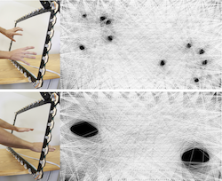
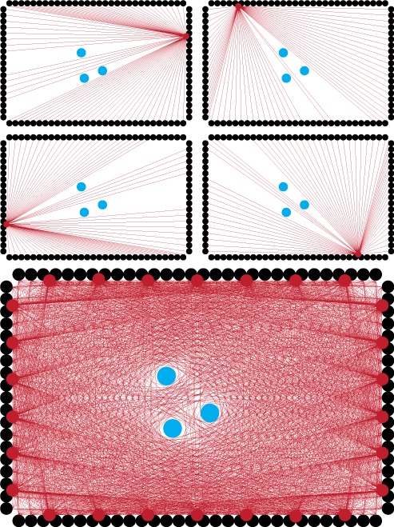

 AUSTIN, TX. -- The Texas A&M Interface Ecology Lab introduces the latest generation of the high fidelity ZeroTouch™ Sensor for multi-touch and free-air interaction at the Interactivity exhibition of the ACM CHI human-computer interaction conference (i433 through 5/12/2012). ZeroTouch is a disruptive technology that brings the body into human-centered computing, enabling new forms of expressive, yet precise and powerful interactivity. ZeroTouch turns any display or any area into a multi-touch surface. The latest ZeroTouch sensor's data transfer rate is 8 times faster than before, enabling construction of sensors of any practical size. ZeroTouch is the highest performance and potentially most cost effective large scale multi-touch sensor currently available. When integrated into a 42" television, ZeroTouch is expected to add as little as $500 to cost at mass production introduction. Meanwhile, development kits are available to a limited number of early adopting researchers at somewhat higher costs. ZeroTouch has been developed with support from the Human-Centered Computing program of the National Science Foundation.
ZeroTouch research is undertaken with support from the Human-Centered Computing program of the National Science Foundation. PSOC components are donated by Cypress Semiconductor.
 The Interface Ecology Lab exhibit features one ZeroTouch integrated with a 55" LCD, heralding a new era of responsive televisions. Also featured are three ZeroTouch sensors for eSports competition, two of them integrated with pen-based computing, for Pen-In-Hand Command. Another pen + multi-touch sensor drives Embodied InfoComposer, a single display groupware for helping people curate more connected and rich collections than those afforded by Pintrest. Zooming Bookmarker uses ZeroTouch to bring multi-touch into Google's Chrome browser. The free-air interaction of intangibleCanvas, reminiscent of Minority Report and Iron Man, invites attendees to collaborate in a painting space.
- Pen in Hand Command provides a more direct and entertaining means of interaction for real time strategy games in the vein of Starcraft. eSports spectators see the players gesture and the action unfold. As pairs of participants go head to head in a competitive game of skill, commentators can use ZeroTouch to change the view, with greater ease than live sports cameramen. Ph.D. student researcher and developer Bill Hamilton extols the thrill of, "New fluid means to manipulate and control the battlefield, enabling more precise and complex control than ever before."
- Embodied InfoComposer enables more expressive and natural interactions for exploring and organizing information collections of rich bookmarks. Participants use fluid pen and multi-touch interactions to compose visual overviews that express and develop relationships, supporting creativity. To mitigate the inevitable information overload as collections grow large, Embodied InfoComposer enables grouping rich bookmarks into piles that can be collapsed or fanned out. A Microsoft Kinect tracks the participant's hands and stylus, distinguishing touches performed by the dominant and non-dominant hands. Using the non-dominant hand as a reference frame, like positioning paper for the dominant hand, exciting new natural forms of pen + multi-touch interaction are made possible.
- ZoomBrowser utilizes rich bookmarks and a zoomable bookmarking space to transform Google Chrome into a fluid multi-touch browser. Web surfers see their active web pages represented as rich bookmarks in an infinite, zoomable space. As you zoom out, an individual web page transitions fluidly into a series of overviews, reminiscent of the Eames' brothers' Powers of Ten. A space connecting rich bookmarks for all tabs brings new cohesion to the browsing experience.
- intangibleCanvas uses the ZeroTouch sensor as a precision free-air interaction input modality, allowing users to reach through the sensor and paint on a projected screen. The embodied interaction enables painting with the elbows, the arms, and the head as well as the fingers. intangibleCanvas affords control over brush style, color, and ink flow through a multi-modal phone interface held in the non-dominant hand. intangibleCanvas 2.0 uses a visible laser plane to overcome free-air interaction's common problem of invisible activation. Participants can take their paintings home by email, and publish to a shared online space.
Zerotouch is a point-to-point visual hull sensing technology, meaning it uses hundreds of modulated infrared sensors and several infrared LEDs to create a series of invisible light beams that cross the screen. When these beams are interrupted, it means something has touched the screen, and we can visualize the interruption of the beams to reconstruct the visual hull of any objects inside the sensor frame.
A limited number of ZeroTouch™ developer kits are now available. Prices start at $2500.
For more information, email zerotouch at ecologylab.net; contact Principal Investigator Andruid Kerne and graduate research associate Jon Moeller for more information.
ZeroTouch™ is a trademark of Andruid Kerne, Jon Moeller, and The Interface Ecology Lab.
publications
 Moeller, J. and Kerne, A.,
ZeroTouch: A Zero-Thickness Optical Multi-Touch Force Field, Interactivity Exhibit,
Proc CHI 2011 EA, 1165-1170 [46%].
http://dx.doi.org/10.1145/1979742.1979710
[video]
Moeller, J. and Kerne, A.,
ZeroTouch: A Zero-Thickness Optical Multi-Touch Force Field, Interactivity Exhibit,
Proc CHI 2011 EA, 1165-1170 [46%].
http://dx.doi.org/10.1145/1979742.1979710
[video]
 Moeller, J., Lupfer, N., Hamilton, B., Lin, H., Kerne, A.,
intangibleCanvas: Free-Air Finger Painting on a Projected Canvas,
Proc CHI 2011 EA, 1615-1620 [46%].
http://dx.doi.org/10.1145/1979742.1979817
Moeller, J., Lupfer, N., Hamilton, B., Lin, H., Kerne, A.,
intangibleCanvas: Free-Air Finger Painting on a Projected Canvas,
Proc CHI 2011 EA, 1615-1620 [46%].
http://dx.doi.org/10.1145/1979742.1979817